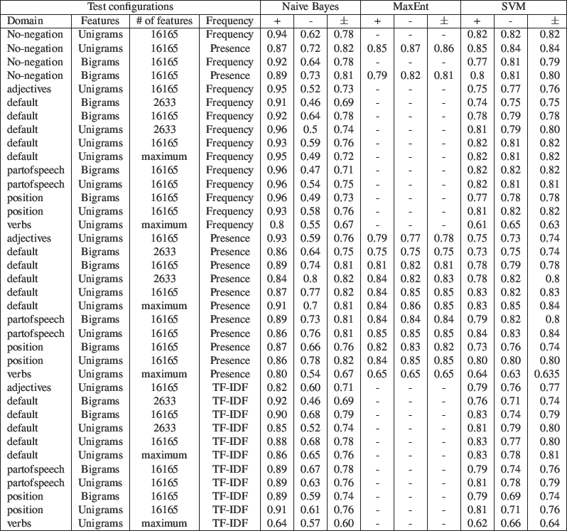
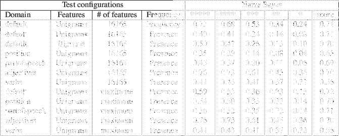
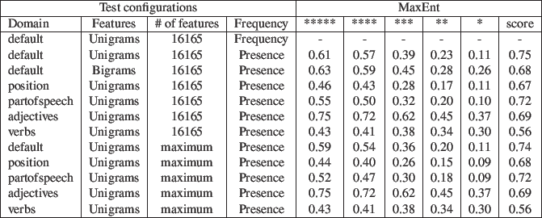
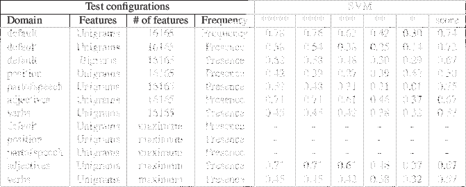

Mostly out of curiosity, we wanted to see how our test configurations will perform when training on the movie dataset and testing on the Yelp dataset, an external out-of-domain dataset. We preprocessed the Yelp dataset[8] such that it matched the format of the movie dataset and selected 1000 of each of the 1-5 star rating reviews. For evaluation purposes, we scored the accuracy on only 1-star and 5-star reviews, giving our testbed only high-confidence negative and positive reviews, respectively. The score was simply the average of the two accuracies.
Across the board, the classifiers had a harder time with the Yelp dataset as compared to the movie dataset, performing between 56.0% and 75.2%. The respective lowest and highest performing configurations scored at 67.0% and 84.0% on the movie dataset.
We expected to see worse results, given the difference in vocabulary, subject matter, tone, etc., but all configurations performed better than random. We also saw strong positive trends across all test configurations, classifying reviews with more stars more positively.
Figure 1:
3-fold cross validation results on movie dataset. Values repesent positive, negative, or overall accuracy.
|  |
Figure 2:
Test results on Yelp dataset with Naive Bayes classifier. Values repesent percent of reviews classified as positive for a given star rating.
|  |
Figure 3:
Test results on Yelp dataset with Maximum Entropy classifier. Values repesent percent of reviews classified as positive for a given star rating.
|  |
Figure 4:
Test results on Yelp dataset with SVM classifier. Values repesent percent of reviews classified as positive for a given star rating.
|  |
Pranjal Vachaspati
2012-02-05